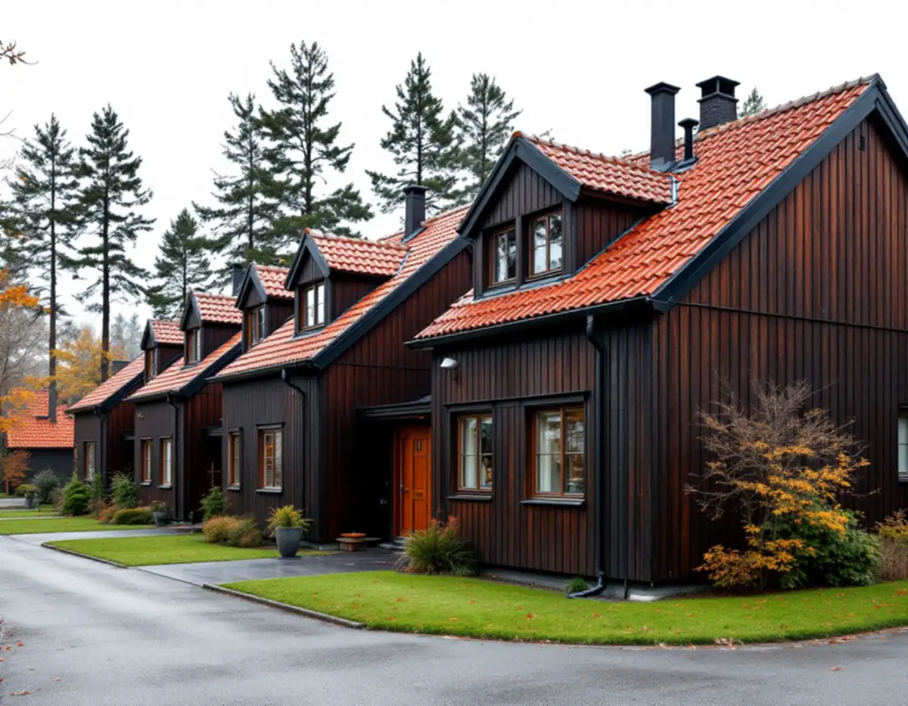
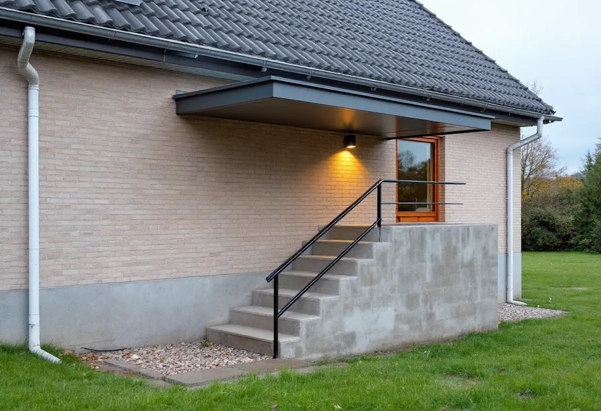

Verksamhetsområde
Vi tar reda på om fastigheten får ansluta takvattnet till kommunens dagvattennät eller ska ta hand om det själv.
Järfälla har knappt 11 500 bostäder i småhus enligt SCB. Där ett hus har källartrappa, garagenedfart eller entré under marknivå hittar regnvattnet lätt dit, och kommunen har skrivit ner hur takvattnet ska tas om hand för att undvika översvämmade källare. Geal Entreprenad AB byter hängrännor och stuprör, bygger skärmtak i plåt och tvättar och målar plåttak i Järfälla, med gratis platsbesök och skriftligt kostnadsförslag.

I Järfälla är kommunen själv VA-huvudman, genom tekniska nämnden. Kommunens rekommendationer för dag- och dränvattenhantering slår fast att dag- och dräneringsvatten aldrig ska ledas till spillvattennätet. Vattnet ska hanteras inom den egna fastigheten eller ledas till det kommunala dagvattennätet, om ett sådant finns.
Om det finns avgörs av vilket verksamhetsområde fastigheten ligger i. Kommunen har två: Dagvatten gata, där kommunen leder bort vatten från vägar och allmänna ytor, och Dagvatten fastighet, där kommunen också tar hand om dagvatten från privat fastighetsmark. Nästan alla bostäder ligger inom området för dricksvatten och spillvatten, men flera områden ligger utanför det kommunala dagvattenområdet, och där måste fastighetsägaren själv ta hand om dag- och dräneringsvattnet lokalt.
Innan vi kopplar ett nytt stuprör till en ledning i marken frågar vi därför vart ledningen går. Ska fastigheten anslutas till kommunens dagvattennät ska vattnet enligt rekommendationerna först passera en brunn med sandfång, som behöver rensas med jämna mellanrum. Har huset en befintlig LOD-anläggning skriver kommunen att du ska kontakta den innan lösningen byggs bort eller ändras.

Takvattnet bör enligt kommunen ledas bort från huset med utkastare och ränndalsplattor eller med ett rör, till en lämplig infiltrationsyta minst cirka 2 meter från huset där vattnet kan tas upp av växtlighet eller rinna ner i marken. Konstruktionen ska utformas så att vattnet leds bort från byggnaden och inte ger fuktskador.
Marken närmast huset bör luta minst 15 centimeter på de första 3 metrarna ut från ytterväggen. Ytvatten får aldrig ledas till en annan fastighet utan ägarens godkännande, och du ansvarar för att inte leda vatten till grannar eller allmänna gator. Ibland behövs vallar eller rännor vid tomtgränsen. Samlar du takvattnet i en tunna ska vatten som svämmar över tunnans kant inte kunna skada byggnaden.
På radhus och kedjehus sitter stuprören ofta tätt och ibland nära grannens entré. Vi placerar utkastare och nedre stuprörsdelar så att vattnet når en grönyta på den egna tomten, och kontrollerar att rännan har fall mot rätt stuprör. Mer om husen och taken i kommunen finns under takrenovering i Järfälla.
Kommunen pekar ut källartrappor och garagenedfarter som lågpunkter där regnvatten inte ska få rinna ner. Ett tak över trappan eller nedfarten hindrar att det regnar ner där, och i vissa fall kan en mindre vall stoppa ytvatten från andra ytor. Kan vattnet hållas borta behövs ingen spygatt, skriver kommunen. Finns det en spygatt ska den alltid vara ansluten till en pump.
Ett skärmtak över en källartrappa är ett typiskt plåtjobb: ett litet tak med plåttäckning, en ränna och en avslutning mot fasaden som inte släpper in vatten bakom. Vattnet från skärmtaket får inte rinna ner i trappan igen, så stupröret leds ut åt sidan och vidare mot gräset, på samma sätt som från huvudtaket.
I souterränghus ligger både entréer och garageportar ofta under marknivån på ena sidan. Kommunen skriver att den bästa lösningen är att inte ha garageportar och dörrar under marknivå. Går det inte att ändra planerar vi skärmtak, ränna och stuprör så att så lite vatten som möjligt når lågpunkten. Om badrum och källarplan i husen läser du under badrumsrenovering i Järfälla.
Enligt kommunens faktablad om dagvatten, reviderat i september 2025, rinner en stor del av dagvattnet i Järfälla till Bällstaån, Mälaren, Översjön, Säbysjön eller Igelbäcken. Mälaren är vattentäkt för nästan hela Stockholmsregionen, och delar av kommunen ingår i Östra Mälarens vattenskyddsområde.
Faktabladet tar upp tvätt av tak och fasader särskilt: vid tak- och fasadtvätt ska bästa möjliga teknik och tvättkemikalier användas, eftersom tvätt- och spolvatten annars följer med ner i dagvattenbrunnarna. Dagvatten från byggnader och byggarbetsplatser kan dessutom innehålla höga halter av bland annat metaller.
Ska ett gammalt plåttak tvättas och målas om planerar vi därför var tvättvattnet tar vägen innan arbetet börjar, och rost och färgflagor samlas upp i stället för att spolas ner i rännan. Hur en takmålning går till finns under takmålning, och mer om plåtarbeten i allmänhet under plåtslagare.
Vi tar reda på om fastigheten får ansluta takvattnet till kommunens dagvattennät eller ska ta hand om det själv.
Källartrappor, garagenedfarter och entréer under mark gås igenom tillsammans med rännorna.
Rännor, stuprör, skärmtak och eventuell tvätt och målning prissätts var för sig.
Ny plåt monteras med fall mot rätt stuprör och utkastare som leder vattnet ut på gräset.
Vid genomgången visar vi var vattnet hamnar och vilka brunnar och silar som ska rensas.
Skatteverket godkänner rotavdrag för att reparera, rengöra eller byta ut plåttak, hängrännor och stuprör i ett småhus, och för att rengöra tak och hängrännor. Ställning som monteras i samband med arbetet räknas också.
Avdraget är 30 procent av arbetskostnaden, högst 50 000 kr per person och år inom 75 000 kr för rot och rut tillsammans. Material ger inget avdrag. Geal drar avdraget direkt på fakturan.
Antalet stuprör och hur långt vattnet ska ledas ut, om ett skärmtak ska byggas över trappa eller nedfart, takets höjd på ett souterränghus och om plåttaket ska tvättas och målas. Efter ett gratis platsbesök får du ett skriftligt kostnadsförslag.
Plåttak, hängrännor och beslag.
Plåtslagare i Stockholm →Takbyte, takbesiktning och plåtarbeten.
Takläggare i Järfälla →Jakobsberg, Viksjö och Kallhäll.
Takrenovering i Järfälla →Planbesked, extra bostad och ansvar.
Byggföretag i Järfälla →Kedjehus, sekelskiftesvillor och parstuga i Stäket.
Fasadrenovering i Järfälla →Bruksvillor, radhus och 70-talsfönster i Järfälla.
Fönsterbyte i Järfälla →Kedjehus, egnahem och gamla golvskikt.
Golvläggare i Järfälla →Kedjehus, radhus och souterräng.
Köksrenovering i Järfälla →Radhus, kedjehus och souterränghus.
Badrumsrenovering i Järfälla →Putsade radhus, kedjehus och villor i Järfälla.
Målare i Järfälla →Förgårdar, förråd och ytterdörrar.
Snickare i Järfälla →